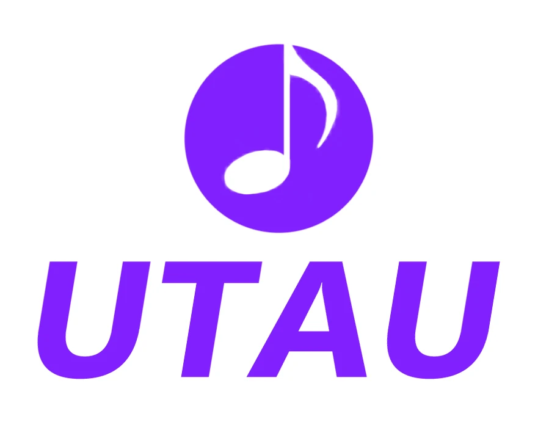
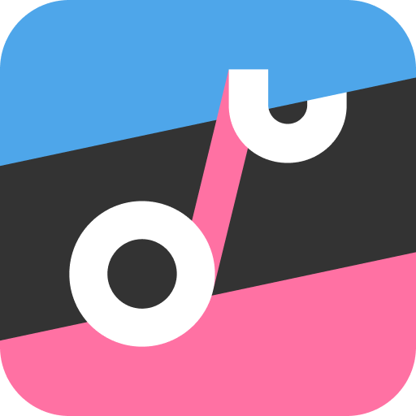

Vocaloid is the original when it comes to Vsynths, having
pioneered the technology. They are often confused for Crypton
Future Media - the company behind the initial software and Hatsune
Miku, but the Vocaloid engine itself hosts many independant voices and
isn't beholden to strictly the crypton 6 - that is Kaito, Meiko,
Hatsune Miku, Kagamine Len & Rin, and Megurine Luka.
The Vocaloid Engine is still popular largely because of its
history and the associated Synths, though many have gripes with its
actual functionality.
Vocal Synthesis Software
Synthesizer V
Synthesizer V is largely agreed to be the best Vocal Synthesis
engine currently on the market, with great usability and a wide range
of popular voices.
It was originally developed based off a resampler from the Utau
engine.
The company behind it, Dreamtonics, is well known for making
synths with no canon design or personality, wich is rare in VSynth.

Utau & Open Utau

Utau is a free software that was originally made as an
alternative to Vocaloid, and is currently the only popular free Vsynth
engine.
Utau stopped receiving major updates in 2013, and only runs in
Japanese, making it hard to use, wich is why OpenUtau - a program made
by the same person who made Utau - was developed.
OpenUtau is essentially Utau 2 - more features, completly
open-source, and backwards compatible with Utau voices. It also runs
in English optionally, though much of the labeling for phonemes still
uses hiragana instead of romaji, even with english voicebanks.
OpenUtau also has an optional paid version to support the
developer, though the community is large enough to have created
plugins or alternatives to the paid features.